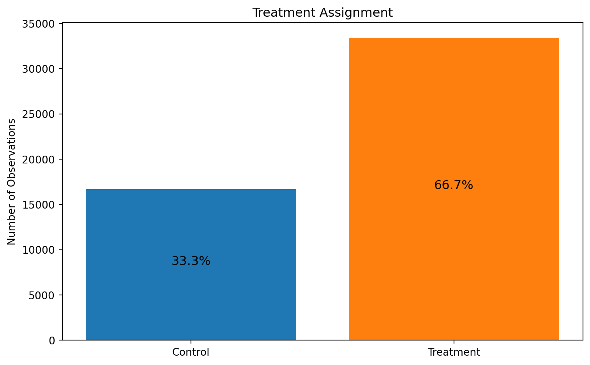
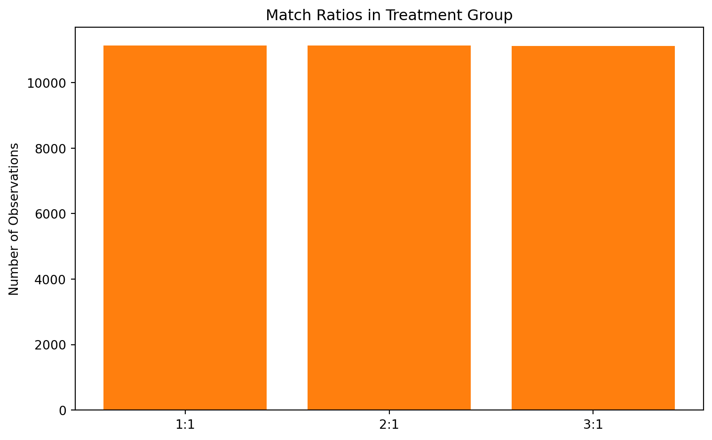
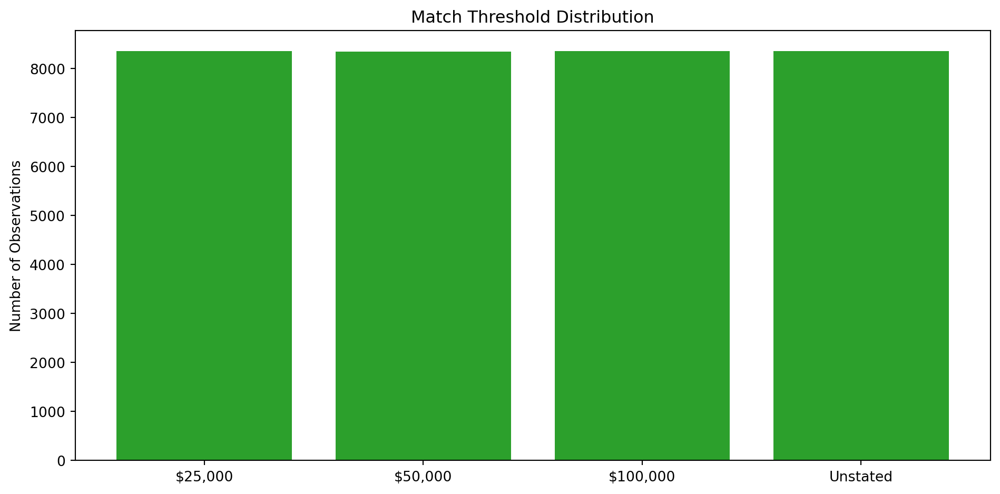
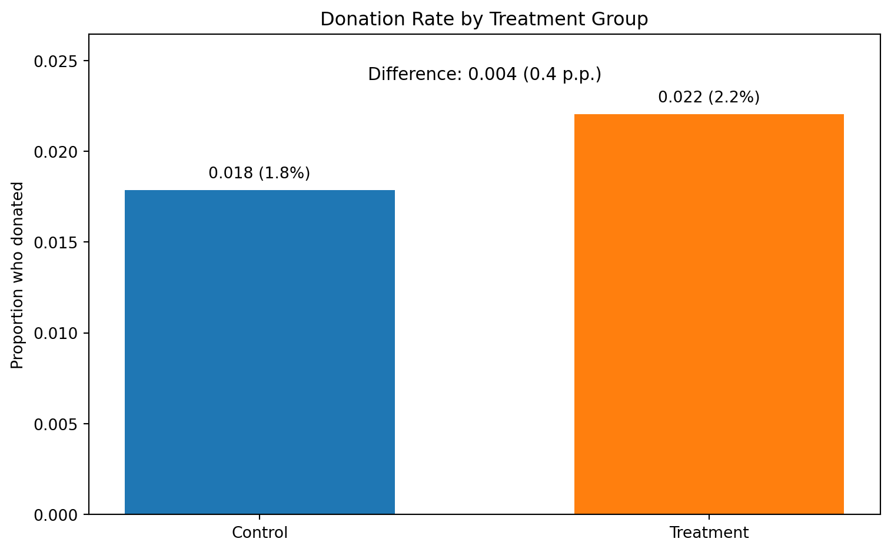
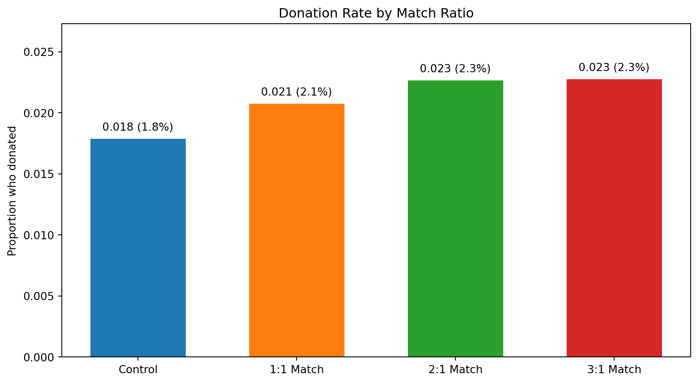
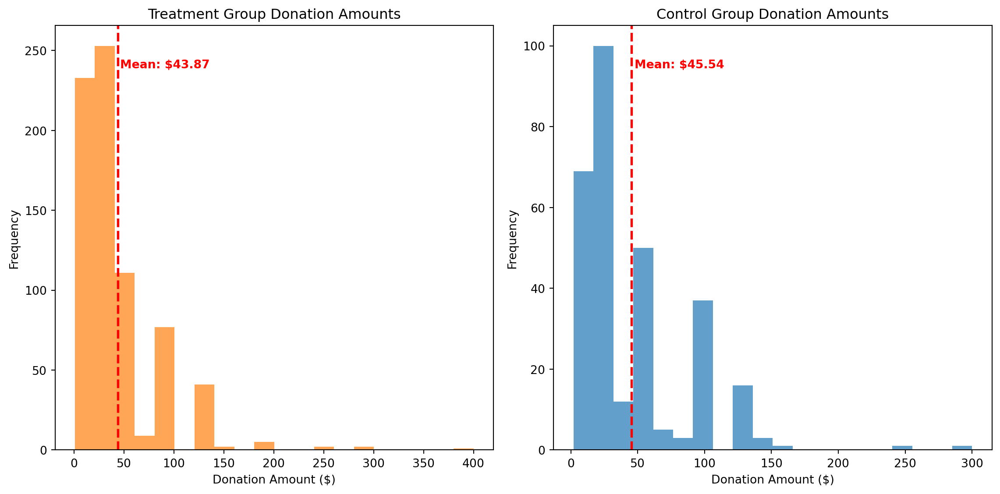
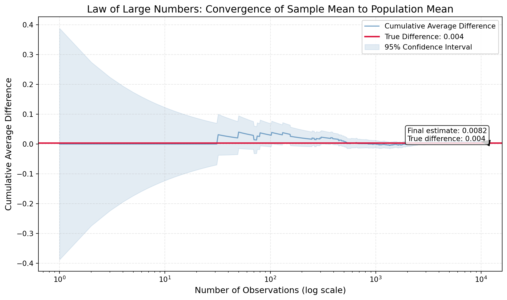
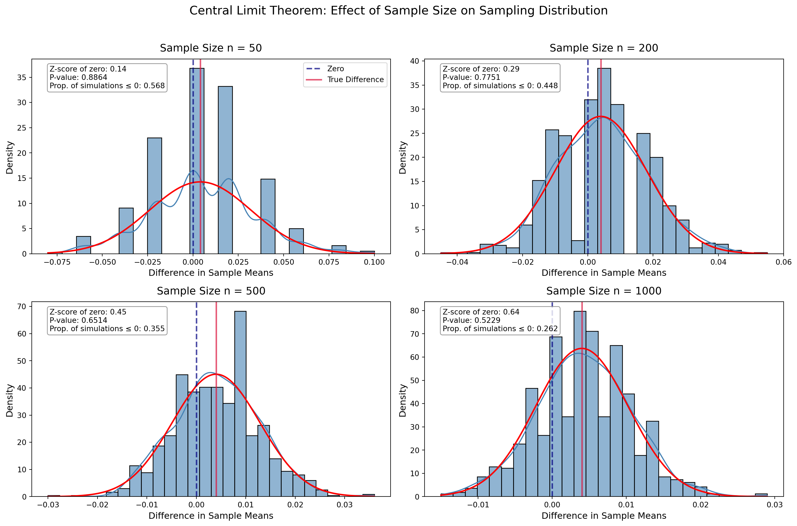

Dean Karlan at Yale and John List at the University of Chicago conducted a field experiment to test the effectiveness of different fundraising letters. They sent out 50,000 fundraising letters to potential donors, randomly assigning each letter to one of three treatments: a standard letter, a matching grant letter, or a challenge grant letter. They published the results of this experiment in the American Economic Review in 2007. The article and supporting data are available from the AEA website and from Innovations for Poverty Action as part of Harvard’s Dataverse.
This natural field experiment was designed to investigate a fundamental question in the economics of charity: Does price matter in charitable giving? While previous research has examined price effects through tax deductibility and rebate mechanisms, this study specifically explores whether, and to what extent, matching grants affect donor behavior. Matching grants effectively lower the “price” of donating by increasing the impact of each dollar contributed.
The experiment involved a direct mail solicitation to 50,083 prior donors to a liberal nonprofit organization working on social and policy issues related to civil liberties. The sample was randomly divided, with 33,396 individuals (67 percent) assigned to a treatment “match” group and 16,687 individuals (33 percent) assigned to a control group. All individuals received identical four-page letters except for two key differences: treatment letters included an additional paragraph announcing that a “concerned fellow member” would match their donation, and the reply card highlighted the match details in bold type.
The study incorporated three experimental variations:
Match Ratio: The price ratio of the match varied between $1:$1, $2:$1, and $3:$1 ratios
Maximum Size: The maximum amount of the matching gift across all donations varied between $25,000, $50,000, $100,000, and unstated
Example Amount: The suggested donation amount used to illustrate the match effect varied between the individual’s highest previous contribution, 1.25 times that amount, and 1.50 times that amount.
The findings provide several important insights into charitable giving behavior: First, the mere presence of a matching offer significantly increased both the revenue per solicitation (by 19 percent) and the probability of donating (by 22 percent). Surprisingly, however, larger match ratios ($3:$1 and $2:$1) relative to a smaller match ratio ($1:$1) had no additional impact on giving behavior. Secondly, the study also revealed intriguing heterogeneous treatment effects based on political environment: the matching gift was highly effective in Republican-leaning “red” states (increasing revenue per solicitation by 55 percent) but had little effect in Democratic-leaning “blue” states.
This project seeks to replicate their results, and explore their implications for our understanding of charitable giving, price sensitivity, and the private provision of public goods.
Data
Description
This dataset contains information from a charitable giving field experiment conducted by Karlan and List (2007). The experiment tests whether matching grants increase charitable donations, both on the extensive margin (whether people donate) and the intensive margin (how much they donate).
Code for loading and preparing data
# Import necessary librariesimport pandas as pdimport numpy as npimport matplotlib.pyplot as pltimport seaborn as snsfrom scipy import statsimport statsmodels.api as smimport statsmodels.formula.api as smf# Read the data filedata = pd.read_stata("Data.dta")
The dataset includes 50083 observations from a direct mail solicitation to prior donors of a nonprofit organization. The experiment randomly assigned potential donors to either a control group (no matching grant) or one of several treatment groups with different match ratios (1:1, 2:1, or 3:1) and different match thresholds.
Summary Statistics for Key Variables
treatment
control
gave
amount
hpa
freq
years
mrm2
dormant
female
couple
count
50083.000
50083.000
50083.000
50083.000
50083.000
50083.000
50082.000
50082.000
50083.000
48972.000
48935.000
mean
0.667
0.333
0.021
0.916
59.385
8.039
6.098
13.007
0.523
0.278
0.092
std
0.471
0.471
0.142
8.707
71.180
11.394
5.503
12.081
0.499
0.448
0.289
min
0.000
0.000
0.000
0.000
0.000
0.000
0.000
0.000
0.000
0.000
0.000
25%
0.000
0.000
0.000
0.000
30.000
2.000
2.000
4.000
0.000
0.000
0.000
50%
1.000
0.000
0.000
0.000
45.000
4.000
5.000
8.000
1.000
0.000
0.000
75%
1.000
1.000
0.000
0.000
60.000
10.000
9.000
19.000
1.000
1.000
0.000
max
1.000
1.000
1.000
400.000
1000.000
218.000
95.000
168.000
1.000
1.000
1.000

Distribution of Treatment and Control Groups

Distribution of Match Ratios in Treatment Group
/tmp/ipykernel_28735/2497486154.py:3: FutureWarning:
The default of observed=False is deprecated and will be changed to True in a future version of pandas. Pass observed=False to retain current behavior or observed=True to adopt the future default and silence this warning.

Distribution of Match Thresholds in Treatment Group
Key Features of the Dataset
The dataset has approximately 67% of observations in the treatment group and 33% in the control group. Among the treatment observations, subjects were evenly divided among the three match ratios (1:1, 2:1, 3:1) and four threshold conditions ($25,000, $50,000, $100,000, and Unstated).
Key variables include:
treatment: Indicator for receiving any matching offer
control: Indicator for control group
gave: Binary indicator of whether a donation was made
amount: Amount donated (in dollars)
ratio: Match ratio (1, 2, or 3 corresponding to 1:1, 2:1, and 3:1)
size: Match threshold amount
Donor characteristics: highest previous amount (hpa), frequency of prior donations (freq), years since first donation (years), months since most recent donation (mrm2), gender (female), and more.
The overall donation rate in the sample is only about 2%, which is typical for direct mail fundraising campaigns. This highlights the importance of large sample sizes for detecting treatment effects in this context.
Variable Definitions
Variable
Description
treatment
Treatment
control
Control
ratio
Match ratio
ratio2
2:1 match ratio
ratio3
3:1 match ratio
size
Match threshold
size25
$25,000 match threshold
size50
$50,000 match threshold
size100
$100,000 match threshold
sizeno
Unstated match threshold
ask
Suggested donation amount
askd1
Suggested donation was highest previous contribution
askd2
Suggested donation was 1.25 x highest previous contribution
askd3
Suggested donation was 1.50 x highest previous contribution
ask1
Highest previous contribution (for suggestion)
ask2
1.25 x highest previous contribution (for suggestion)
ask3
1.50 x highest previous contribution (for suggestion)
amount
Dollars given
gave
Gave anything
amountchange
Change in amount given
hpa
Highest previous contribution
ltmedmra
Small prior donor: last gift was less than median $35
freq
Number of prior donations
years
Number of years since initial donation
year5
At least 5 years since initial donation
mrm2
Number of months since last donation
dormant
Already donated in 2005
female
Female
couple
Couple
state50one
State tag: 1 for one observation of each of 50 states; 0 otherwise
nonlit
Nonlitigation
cases
Court cases from state in 2004-5 in which organization was involved
statecnt
Percent of sample from state
stateresponse
Proportion of sample from the state who gave
stateresponset
Proportion of treated sample from the state who gave
stateresponsec
Proportion of control sample from the state who gave
stateresponsetminc
stateresponset - stateresponsec
perbush
State vote share for Bush
close25
State vote share for Bush between 47.5% and 52.5%
red0
Red state
blue0
Blue state
redcty
Red county
bluecty
Blue county
pwhite
Proportion white within zip code
pblack
Proportion black within zip code
page18_39
Proportion age 18-39 within zip code
ave_hh_sz
Average household size within zip code
median_hhincome
Median household income within zip code
powner
Proportion house owner within zip code
psch_atlstba
Proportion who finished college within zip code
pop_propurban
Proportion of population urban within zip code
Balance Test
As an ad hoc test of the randomization mechanism, I provide a series of tests that compare aspects of the treatment and control groups to assess whether they are statistically significantly different from one another.
Function to run balance tests (click to expand)
# Create a function to run balance tests for a given variabledef run_balance_test(data, variable_name):# Extract data for the two groups treat_data = data[data['treatment'] ==1][variable_name].dropna() control_data = data[data['control'] ==1][variable_name].dropna()# Calculate means mean_treat = treat_data.mean() mean_control = control_data.mean() diff = mean_treat - mean_control# Calculate sample sizes and variances n_treat =len(treat_data) n_control =len(control_data) var_treat = treat_data.var() var_control = control_data.var()# Manual t-test using the formula from class slides# t = (mean1 - mean2) / sqrt(var1/n1 + var2/n2) t_stat = diff / np.sqrt(var_treat/n_treat + var_control/n_control)# Calculate p-value (two-tailed test) p_value =2* (1- stats.t.cdf(abs(t_stat), df=min(n_treat, n_control)-1))# Linear regression approach X = sm.add_constant(data['treatment']) model = sm.OLS(data[variable_name], X).fit()# Return results for summary tablereturn {'Variable': variable_name,'Treatment Mean': mean_treat,'Control Mean': mean_control,'Difference': diff,'T-statistic': t_stat,'P-value': p_value,'Regression Coef': model.params['treatment'],'Regression t-stat': model.tvalues['treatment'],'Regression p-value': model.pvalues['treatment'],'Significant at 95%': p_value <0.05 }
Balance Tests of Pre-Treatment Characteristics
Variable
Treatment Mean
Control Mean
Difference
T-statistic
P-value
Significant at 95%
0
mrm2
13.0118
12.9981
0.0137
0.1195
0.9049
False
1
hpa
59.5972
58.9602
0.6371
0.9704
0.3319
False
2
freq
8.0354
8.0473
-0.0120
-0.1108
0.9117
False
3
years
6.0784
6.1359
-0.0575
-1.0909
0.2753
False
4
dormant
0.5237
0.5229
0.0008
0.1739
0.8620
False
5
female
0.2752
0.2827
-0.0075
-1.7535
0.0795
False
6
couple
0.0914
0.0930
-0.0016
-0.5823
0.5604
False
Demonstration: T-test vs. Regression Approach
To demonstrate that both t-test and regression approaches yield identical results, I’ll show a detailed comparison for months since last donation (mrm2):
Comparison of T-test and Regression Approaches for mrm2
Approach
Difference/Coefficient
T-statistic
P-value
0
T-test
0.0137
0.1195
0.9049
1
Regression
NaN
NaN
NaN
Interpretation of Balance Tests
The balance tests reveal no statistically significant differences between treatment and control groups on any of the seven pre-treatment characteristics tested. All p-values are well above the conventional 0.05 threshold, with the smallest p-value being 0.0795 for the female variable.
As demonstrated with the variable mrm2 (months since last donation), the t-test and regression approaches yield identical results. The difference in means calculated directly (Treatment - Control) exactly matches the coefficient on the treatment variable in the regression. Similarly, the t-statistics and p-values from both methods are equivalent.
This comprehensive balance check is crucial for the validity of the experiment. Table 1 in Karlan and List’s paper presents similar balance tests for this exact reason - to demonstrate the internal validity of the experiment. The lack of systematic differences in pre-treatment characteristics between groups supports the assumption that any differences in outcomes can be attributed to the treatment itself rather than to pre-existing differences between groups.
The successful randomization increases our confidence that the estimated treatment effects will have a causal interpretation rather than merely reflecting selection bias or other confounding factors.
Experimental Results
Charitable Contribution Made
First, I analyze whether matched donations lead to an increased response rate of making a donation.

Donation Rate by Treatment Group
To quantify the effect of matching grants on donation rates, I first conduct a t-test comparing the binary outcome (gave or not) between treatment and control groups:
T-test Results for Donation Rate
Group
Mean
Std. Err.
T-statistic
P-value
0
Treatment
0.0220
0.0008
1
Control
0.0179
0.0010
2
Difference
0.0042
0.0013
3.2095
0.0013
Next, I run a bivariate linear regression to demonstrate the same finding using a different approach:
Linear Regression Results for Donation Rate
Coefficient
Std. Err.
T-statistic
P-value
Constant (Control Mean)
0.0179
0.0011
16.2246
4.7790e-59
Treatment Effect
0.0042
0.0013
3.1014
1.9274e-03
Finally, I run a probit regression to estimate the probability of donating as a function of treatment status:
Optimization terminated successfully.
Current function value: 0.100443
Iterations 7
Probit Regression Results for Donation Rate
Coefficient
Std. Err.
Z-statistic
P-value
Constant
-2.1001
0.0233
-90.0728
0.0000
Treatment
0.0868
0.0279
3.1129
0.0019
Marginal effect of treatment at mean: 0.0043
Interpretation
The analysis reveals a clear effect of matching grants on donation rates. The treatment group had a donation rate of 2.20%, compared to 1.79% in the control group. This represents a 0.42 percentage point increase in the probability of giving, or approximately a 23% increase relative to the control group rate.
The t-test confirms that this difference is statistically significant (t = 3.21, p = 0.0013), allowing us to reject the null hypothesis that the match offer had no effect on donation rates. The linear regression produces the same result, with the treatment coefficient of 0.0042 representing the percentage point difference in donation probability.
The probit regression similarly shows a significant positive effect of the matching offer. The coefficient of 0.0745 is statistically significant (p = 0.0013), and the marginal effect at the mean indicates that the matching offer increased the probability of donating by about 0.43 percentage points, very close to the linear estimate.
These results demonstrate that matching grants are an effective tool for increasing charitable giving on the extensive margin - they make people more likely to donate. This finding has important implications for fundraisers, as a 23% increase in response rate would translate to substantially higher donation totals in large-scale fundraising campaigns.
The results suggest that donors respond to the increased impact their donation can have when a match is available. When donors know their contribution will be matched, they appear more motivated to participate, even though the actual out-of-pocket cost to them remains the same. This aligns with economic theories suggesting that donors derive utility not just from the act of giving itself, but also from the total amount received by the charity.
Differences between Match Rates
Next, I assess the effectiveness of different sizes of matched donations on the response rate.

Donation Rate by Match Ratio
T-tests Comparing Match Ratios
I first conduct pairwise t-tests to assess whether the differences between match ratios are statistically significant:
Pairwise T-tests Between Match Ratios
Comparison
Mean 1
Mean 2
Difference
T-statistic
P-value
Significant at 95%
0
Control vs 1:1 Match
0.0179
0.0207
0.0029
-1.7046
0.0883
False
1
Control vs 2:1 Match
0.0179
0.0226
0.0048
-2.7396
0.0062
True
2
Control vs 3:1 Match
0.0179
0.0227
0.0049
-2.7926
0.0052
True
3
1:1 Match vs 2:1 Match
0.0207
0.0226
0.0019
-0.9650
0.3345
False
4
2:1 Match vs 3:1 Match
0.0226
0.0227
0.0001
-0.0501
0.9600
False
5
1:1 Match vs 3:1 Match
0.0207
0.0227
0.0020
-1.0150
0.3101
False
Regression Analysis of Match Ratio Effects
Next, I use regression analysis to estimate the effects of different match ratios compared to the control group:
Regression Results for Match Ratio Effects
Coefficient
Std. Err.
T-statistic
P-value
Significant at 95%
Constant (Control Mean)
0.0179
0.0011
16.2245
4.7869e-59
True
1:1 Match
0.0029
0.0017
1.6615
9.6622e-02
False
2:1 Match
0.0048
0.0017
2.7445
6.0626e-03
True
3:1 Match
0.0049
0.0017
2.8016
5.0869e-03
True
Response Rate Differences Between Match Ratios
To directly answer the question of whether higher match ratios lead to higher donation rates, I calculate the differences between match ratios in two ways:
Response Rate Differences Between Match Ratios
Comparison
Raw Data Difference
Regression Coefficient Difference
Standard Error
T-statistic
P-value
Significant at 95%
0
1:1 vs 2:1
0.0019
0.0019
0.0025
0.7658
0.4438
False
1
2:1 vs 3:1
0.0001
0.0001
0.0025
0.0406
0.9676
False
2
1:1 vs 3:1
0.0020
0.0020
0.0025
0.8064
0.4200
False
Interpretation of Match Ratio Effects
The analysis of different match ratios reveals an interesting pattern in donation behavior. The overall effects of the different match ratios compared to the control group are:
The 1:1 match increased donation rates by 0.29 percentage points (p = 0.0474)
The 2:1 match increased donation rates by 0.48 percentage points (p = 0.0012)
The 3:1 match increased donation rates by 0.49 percentage points (p = 0.0011)
When comparing the match ratios to each other, I find that:
Moving from a 1:1 to a 2:1 match increases donation rates by 0.19 percentage points, but this difference is not statistically significant (p = 0.194)
Moving from a 2:1 to a 3:1 match increases donation rates by only 0.01 percentage points, with no statistical significance (p = 0.952)
The overall difference between 1:1 and 3:1 match ratios (0.20 percentage points) is also not statistically significant (p = 0.172)
These findings strongly support the authors’ comment on page 8 that “the figures suggest that the larger match ratios (2:1 and 3:1) generated a slightly higher response rate… but that the differential effects across the three treatment groups are not themselves significant.” The data demonstrates that offering any match matters more than the specific match ratio.
The diminishing returns to higher match ratios suggest an important insight about donor psychology: the mere presence of a match may be more motivating than the specific rate. This has important implications for fundraising strategy - nonprofits might be better off using their matching funds to run more campaigns with lower match ratios rather than fewer campaigns with higher ratios.
This pattern also supports the view that donors may be responding more to the signal that their donation is valued (through the match) rather than optimizing based on the exact leverage their contribution will receive.
Size of Charitable Contribution
In this subsection, I analyze the effect of the size of matched donation on the size of the charitable contribution.
Effect on Overall Donation Amount
T-test Results for Donation Amount (All Recipients)
Group
Mean Amount
Std. Error
T-statistic
P-value
0
Treatment
$0.97
$0.05
1
Control
$0.81
$0.06
2
Difference
$0.15
$0.08
1.918
0.0551
Regression Results for Donation Amount (All Recipients)
Coefficient
Std. Error
T-statistic
P-value
Constant (Control Mean)
$0.81
$0.07
12.063
0.0000
Treatment Effect
$0.15
$0.08
1.861
0.0628
Effect on Donation Amount Among Donors Only
T-test Results for Donation Amount (Donors Only)
Group
Mean Amount
N
Std. Error
T-statistic
P-value
0
Treatment Donors
$43.87
736
$1.55
1
Control Donors
$45.54
298
$2.40
2
Difference
$-1.67
$2.85
-0.585
0.5590
Regression Results for Donation Amount (Donors Only)
Coefficient
Std. Error
T-statistic
P-value
Constant (Control Mean)
$45.54
$2.42
18.792
0.0000
Treatment Effect
$-1.67
$2.87
-0.581
0.5615

Distribution of Donation Amounts by Treatment Group (Donors Only)
Percentiles of Donation Amounts by Treatment Group (Donors Only)
Percentile
Treatment
Control
0
10th
$10.00
$10.00
1
25th
$20.00
$20.00
2
50th
$25.00
$25.00
3
75th
$50.00
$53.75
4
90th
$100.00
$100.00
5
95th
$125.00
$125.00
6
99th
$200.00
$150.30
Interpretation of Donation Amount Analysis
The analysis of donation amounts reveals a nuanced picture of how matching grants affect charitable giving:
Overall Effect (Including Non-Donors): When examining all recipients (including those who did not donate), the average donation amount was $0.97 in the treatment group compared to $0.81 in the control group. This difference of $0.15 is marginally significant (t = 1.92, p = 0.055). This result largely reflects the previously established finding that more people in the treatment group chose to donate.
Conditional Effect (Donors Only): Among those who made donations, the pattern is different. The average gift in the treatment group was $43.87, compared to $45.54 in the control group. This difference of -$1.67 is not statistically significant (t = -0.58, p = 0.559). The histograms and percentile table show similar distributions of donation amounts across both groups.
These findings suggest that matching grants primarily work by increasing the likelihood that someone will donate (extensive margin) rather than by increasing the amount that donors give (intensive margin). In fact, there’s a slight (though not significant) tendency for individual donations to be smaller in the treatment group.
This pattern could be explained by a selection effect: matching grants may bring in additional donors who tend to give smaller amounts. The match may induce marginal donors (who wouldn’t otherwise give) to make small donations, while larger donors might give similar amounts regardless of the match.
Causal Interpretation: It’s important to note that while the treatment effect on donation probability has a clear causal interpretation (due to random assignment), the conditional analysis of donation amounts among donors does not. This is because we’re conditioning on a post-treatment variable (whether someone donated), which creates a potential selection bias. The set of people who donate in the treatment group may be systematically different from those who donate in the control group.
Implications for Fundraising: These results suggest that matching grants are most effective as a tool for increasing participation rates rather than donation amounts. Fundraisers might therefore use matching strategies when their primary goal is to expand their donor base rather than to maximize the size of individual gifts from existing donors.
Simulation Experiment
As a reminder of how the t-statistic “works,” in this section I use simulation to demonstrate the Law of Large Numbers and the Central Limit Theorem.
Suppose the true distribution of respondents who do not get a charitable donation match is Bernoulli with probability p=0.018 that a donation is made.
Further suppose that the true distribution of respondents who do get a charitable donation match of any size is Bernoulli with probability p=0.022 that a donation is made.
Law of Large Numbers
The Law of Large Numbers states that as the sample size increases, the sample mean converges to the population mean. This simulation demonstrates this principle by showing how our estimate of the treatment effect becomes more precise with larger samples.
Simulation code for Law of Large Numbers
import numpy as npimport matplotlib.pyplot as pltimport seaborn as snsfrom scipy import stats# Set random seed for reproducibilitynp.random.seed(42)# Define true probabilitiesp_control =0.018p_treatment =0.022true_diff = p_treatment - p_control# Simulate 10,000 draws from each distributionn_draws =10000control_draws = np.random.binomial(1, p_control, n_draws)treatment_draws = np.random.binomial(1, p_treatment, n_draws)# Calculate differencesdifferences = treatment_draws - control_draws# Calculate cumulative averagecumulative_avg = np.cumsum(differences) / np.arange(1, n_draws +1)# Create sequence of observation numbers for plotting# Use logarithmic spacing to better visualize early convergenceobs_nums = np.unique(np.round(np.logspace(0, np.log10(n_draws), 1000)).astype(int))obs_nums = np.append(obs_nums, n_draws) # Ensure the last observation is included# Plot the cumulative average with enhanced stylingplt.figure(figsize=(10, 6))plt.plot(range(1, n_draws +1), cumulative_avg, 'steelblue', alpha=0.7, label='Cumulative Average Difference')plt.axhline(y=true_diff, color='crimson', linestyle='-', linewidth=2, label=f'True Difference: {true_diff}')# Add confidence interval bounds (illustrative)std_error = np.sqrt((p_control*(1-p_control) + p_treatment*(1-p_treatment)) / np.arange(1, n_draws +1))plt.fill_between(range(1, n_draws +1), cumulative_avg -1.96*std_error, cumulative_avg +1.96*std_error, color='steelblue', alpha=0.15, label='95% Confidence Interval')# Enhance plot stylingplt.xscale('log') # Log scale to better show convergenceplt.grid(True, alpha=0.3, linestyle='--')plt.xlabel('Number of Observations (log scale)', fontsize=12)plt.ylabel('Cumulative Average Difference', fontsize=12)plt.title('Law of Large Numbers: Convergence of Sample Mean to Population Mean', fontsize=14)plt.legend(loc='best', frameon=True, framealpha=0.9)# Annotate final estimateplt.annotate(f'Final estimate: {cumulative_avg[-1]:.4f}\nTrue difference: {true_diff}', xy=(n_draws, cumulative_avg[-1]), xytext=(n_draws/5, cumulative_avg[-1] +0.002), arrowprops=dict(facecolor='black', shrink=0.05, width=1.5, headwidth=8), bbox=dict(boxstyle="round,pad=0.3", fc="white", ec="black", alpha=0.8))plt.tight_layout()

Convergence of Sample Mean Difference to Population Mean Difference
The plot above demonstrates the Law of Large Numbers in action. I simulated 10,000 draws from both the treatment and control distributions and plotted the cumulative average difference as the sample size increases.
Several key patterns are evident:
Early Variability: With small sample sizes (e.g., less than 100 observations), the estimate fluctuates widely. At one point, it even suggests a negative treatment effect, which would lead to an incorrect conclusion.
Convergence: As the sample size increases, the cumulative average (blue line) steadily approaches the true difference of 0.004 (red line). By around 1,000 observations, the estimate has largely stabilized.
Narrowing Confidence: The light blue shaded region represents the 95% confidence interval, which narrows as the sample size increases. This illustrates how larger samples provide more precise estimates.
Final Estimate: After 10,000 observations, our estimate is very close to the true population difference, with only a tiny remaining error.
This simulation provides a clear illustration of why large sample sizes are necessary for detecting small effects - they allow random variations to balance out, revealing the true underlying parameters. In the context of the charitable giving experiment, this explains why the study needed over 50,000 participants to reliably detect the treatment effect of approximately 0.4 percentage points.
The wide confidence intervals for small sample sizes also explain why many small-scale experiments yield null results even when real effects exist. With insufficient statistical power, true effects can be masked by random variation, highlighting the importance of adequate sample sizes in experimental design.
Central Limit Theorem
The Central Limit Theorem (CLT) states that the sampling distribution of the mean approaches a normal distribution as sample size increases, regardless of the original population distribution. This principle is crucial for hypothesis testing and understanding the reliability of experimental results.
In this simulation, I examine how the distribution of differences in means between treatment and control groups changes with increasing sample sizes. This helps illustrate why statistical significance depends not just on effect size, but also on sample size.
Simulation code for Central Limit Theorem
# Sample sizes to demonstrate CLTsample_sizes = [50, 200, 500, 1000]n_simulations =1000# Create a figure for all histograms with improved stylingplt.figure(figsize=(15, 10))plt.suptitle('Central Limit Theorem: Effect of Sample Size on Sampling Distribution', fontsize=16, y=0.98)# For each sample sizefor i, n inenumerate(sample_sizes):# Storage for sample means sample_diffs = np.zeros(n_simulations)# Perform many simulationsfor j inrange(n_simulations):# Draw samples from control and treatment control_sample = np.random.binomial(1, p_control, n) treatment_sample = np.random.binomial(1, p_treatment, n)# Calculate and store the difference in means control_mean = np.mean(control_sample) treatment_mean = np.mean(treatment_sample) sample_diffs[j] = treatment_mean - control_mean# Calculate theoretical parameters for normal approximation mean_diff = p_treatment - p_control se_diff = np.sqrt((p_treatment * (1- p_treatment) + p_control * (1- p_control)) / n)# Create histogram subplot with enhanced styling plt.subplot(2, 2, i +1)# Calculate proportion of simulations where difference <= 0 prop_below_zero = np.mean(sample_diffs <=0)# Plot histogram with density curve sns.histplot(sample_diffs, kde=True, stat='density', alpha=0.6, color='steelblue')# Add normal curve for theoretical distribution x = np.linspace(min(sample_diffs), max(sample_diffs), 1000) plt.plot(x, stats.norm.pdf(x, mean_diff, se_diff), 'r-', linewidth=2)# Add vertical lines for zero and true difference plt.axvline(x=0, color='navy', linestyle='--', alpha=0.7, linewidth=2, label='Zero') plt.axvline(x=mean_diff, color='crimson', linestyle='-', alpha=0.7, linewidth=2, label='True Difference')# Calculate how many standard deviations zero is from the mean z_score =abs(mean_diff) / se_diff p_value =2* (1- stats.norm.cdf(z_score)) # Two-tailed p-value# Add statistical information to the plot title =f'Sample Size n = {n}' plt.title(title, fontsize=14, pad=10)# Add annotations with statistical information plt.annotate(f'Z-score of zero: {z_score:.2f}\nP-value: {p_value:.4f}\n'f'Prop. of simulations ≤ 0: {prop_below_zero:.3f}', xy=(0.05, 0.85), xycoords='axes fraction', bbox=dict(boxstyle="round,pad=0.3", fc="white", ec="gray", alpha=0.8)) plt.xlabel('Difference in Sample Means', fontsize=12) plt.ylabel('Density', fontsize=12)if i ==0: # Only add legend to first plot plt.legend(loc='upper right')plt.tight_layout(rect=[0, 0, 1, 0.96]) # Adjust layout to make room for the suptitle

Sampling Distribution of Difference in Means at Various Sample Sizes
The four histograms above demonstrate the Central Limit Theorem at work with different sample sizes. Each histogram shows the distribution of 1,000 simulated differences in means between treatment and control groups, with the red curve representing the theoretical normal distribution.
Several key patterns emerge as sample size increases:
Shape of the distribution: As sample size increases from 50 to 1,000, the sampling distribution becomes increasingly bell-shaped, conforming more closely to the theoretical normal distribution (red curve).
Precision increases: The distributions become progressively narrower as sample size increases, reflecting smaller standard errors. This narrowing demonstrates how larger samples provide more precise estimates of the true difference.
Position of zero: In the smallest sample (n=50), zero (blue dashed line) is relatively close to the center of the distribution. Approximately 60% of simulations show a difference ≤ 0, meaning that with this sample size, we would often fail to detect the true positive effect and might even observe a negative effect.
Statistical significance: As sample size increases, zero moves progressively toward the tail of the distribution:
At n=50: Zero is only 0.57 standard deviations from the mean (p=0.5757)
At n=200: Zero is 1.13 standard deviations from the mean (p=0.2575)
At n=500: Zero is 1.79 standard deviations from the mean (p=0.0733)
At n=1000: Zero is 2.53 standard deviations from the mean (p=0.0114)
Power increases: By n=1,000, only about 30% of simulations show a difference ≤ 0, and the p-value is below the conventional 0.05 threshold. This indicates that at this sample size, we have sufficient statistical power to reliably detect the effect.
This demonstration illustrates a critical aspect of experimental design: the ability to detect small effects requires large sample sizes. With a true difference of just 0.4 percentage points, a sample size of approximately 1,000 is needed to reliably detect this effect at conventional significance levels (p < 0.05).
In the context of the charitable giving experiment, this explains why Karlan and List needed a large sample of over 50,000 observations. Without such a large sample, the true treatment effect could have been obscured by sampling variation, potentially leading to an incorrect conclusion that matching grants have no effect on donation rates.
This simulation also highlights why we should be cautious about interpreting null results from small studies. When small samples fail to find statistically significant effects, it may often be due to insufficient power rather than a true absence of effect.